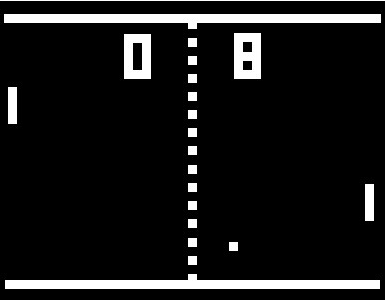

비디오게임기의 History (8비트 이전)
 |
테니스 포투 |
|---|---|
세계 최초의 비디오게임기는1958년 미국의 물리학자 윌리엄 히긴보덤이오실로 스코프상에서 개발한 게임이다. |
|  |
마그나복스 오디세이 |
|
|---|---|
1972년에 출시된 마그나복스 오디세이는 최초의 비디오 게임기 이다. 지금과 같이 조이스틱이나 패드가 아닌 다이얼을 돌려 조작하는 조작 방식이다. 그래픽 지원이 아주 열약했기 때문에 TV화면에 그림이 그려진 투명 필름을 붙여 배경화면을 구성하는 방식 이다 |
.jpg) |
| 퐁 | |
|---|---|
아케이드 게임인 '퐁' 을 집에서 즐길수 있도록한 비디오 게임기 이다. 화면 양쪽을 오가는 공을 받아 치며 즐기는 일종의 탁구 게임이다. 그러나 마그나복스 오디세이와 유사한점이 많아 두 회사는 특허권 분쟁을 겪기도 했다. |
| 아타리 2600 | |
거의 전설의 시작이라 할 만큼 뽑고 끼는 게임팩을 유행시키고 현대 게임기들의 가장 가까운 조상이라고 불릴만한 게임기 이다. 또한 "아타리 쇼크" 사건을 보여줌으로서 게임사들에게 게임성이 얼마나 중요한지 보여주는 게임사 이기도 했다. |